Morphology and word-formation
Lexicology and Lexicography
Outline
- Lexical innovation: How do new words arise and what are the key types?
- Morphology vs word-formation: What’s the distinction and scope?
- Inflection in Present-Day English: What inflectional morphemes exist?
- Morphological building blocks: What are morphemes and their categories?
- Morphemic processes: How do derivation and compounding work?
- Non-morphemic processes: What are conversion, clipping, blending, back-formation, and acronyms?
- Practice: How can we analyse word structure?
Introduction
Lexical innovation
How do new words arise?
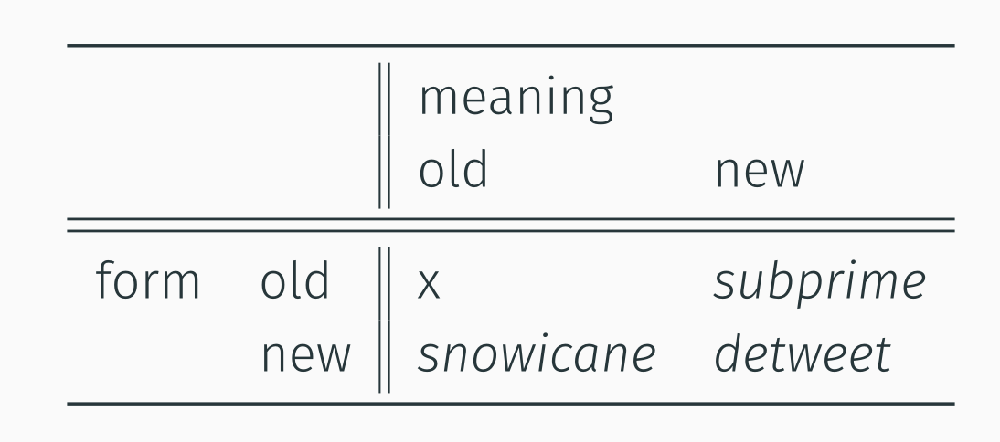
Morphology vs word-formation
What is the difference between morphology and word-formation?
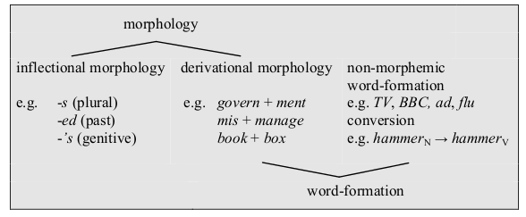
Inflection in Present-Day English
Which inflectional morphemes exist in Present-Day English?
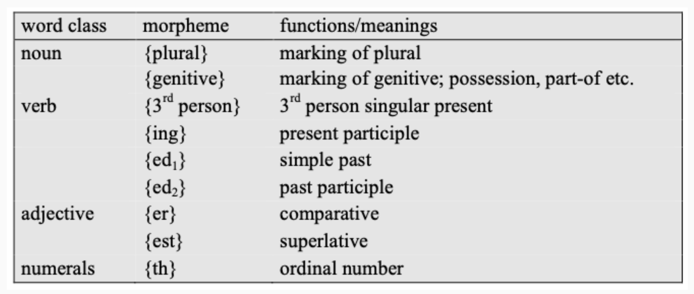
Morphemic word-formation processes
Morphological building blocks
Which types of morphemes are there and how do they differ?
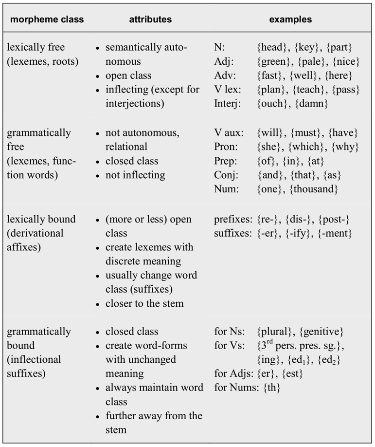
Overview of morphemic word-formation processes
Which morphemic word-formation processes are there?

Exercise: conducting a morphological analysis
Provide a full morphological analysis for the word misrepresentations.
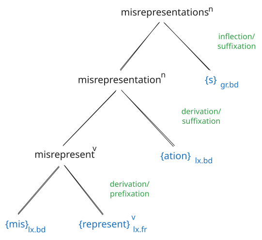
Non-morphemic word-formation
Overview
Which non-morphemic word-formation processes are there?
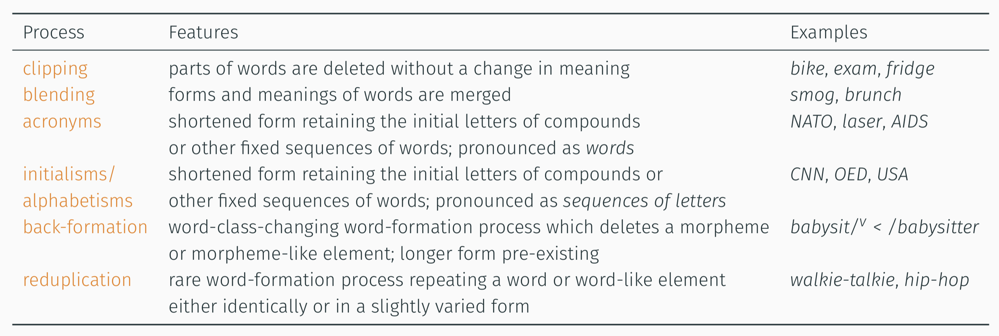
Zero-derivation / conversion vs derivation
What is the difference between zero-derivation and conversion?
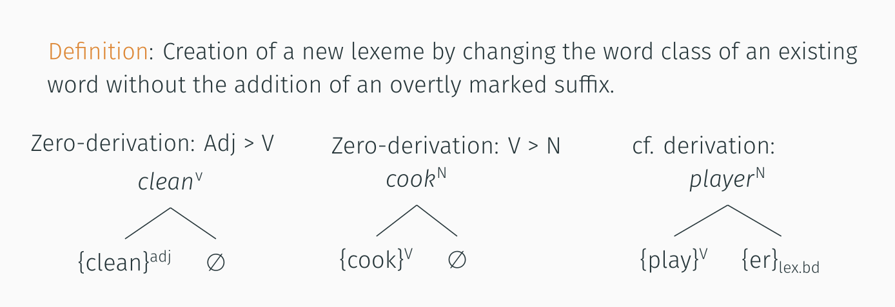
Compounding vs blending
Compound types
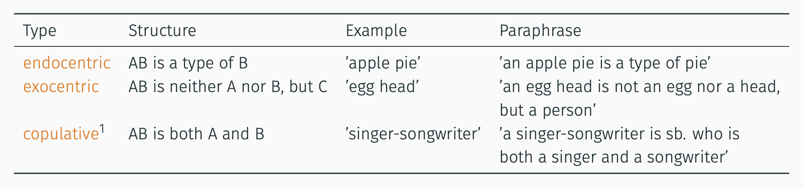
Formal properties of blends
swooshtika – derogatory reference to Nike logo
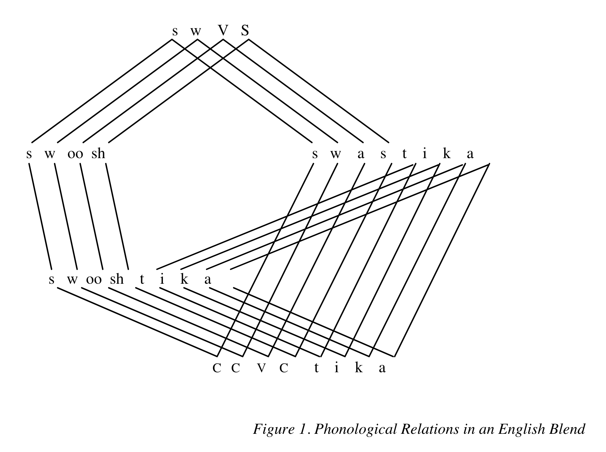
Semantic properties of blends
glitterati
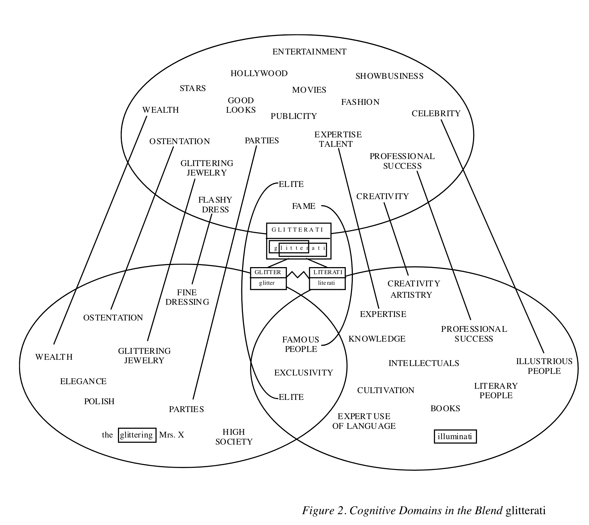
Quiz: classify word-formation processes
Interactive version
Reference answers
| Word | Process/type |
|---|---|
| friendship | derivation |
| distasteful | derivation (prefix + suffix) |
| washing machine | compounding (endocentric) |
| redneck | compounding (exocentric) |
| singer-songwriter | compounding (copulative) |
| paperback | compounding (endocentric) |
| cook (N) ← cook (V) | conversion |
| to Google (V) | conversion |
| fridge | clipping |
| Brangelina | blending |
| swooshtika | blending |
| sightsee | back-formation |
| LOL | acronym/initialism |
Morphemic vs non-morphemic WF – summary
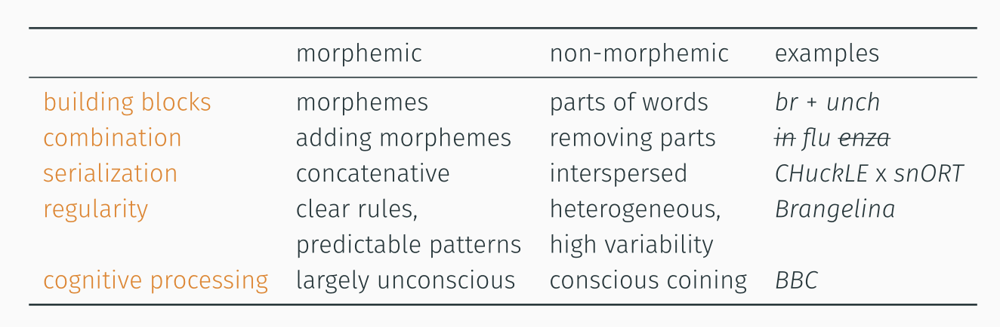
Further reading
- Bauer, Laurie. 2022. An Introduction to English Lexicology. Edinburgh University Press.
- Lipka, Leonhard. 2002. English Lexicology: Lexical Structure, Word Semantics and Word-Formation. Tübingen: Narr.
- Schmid, Hans-Jörg. 2016. English Morphology and Word-Formation - an Introduction. 2nd ed. Berlin: Erich Schmidt Verlag.
References
Kemmer, Suzanne. 2003. “Schemas and Lexical Blends.” In Motivation in Language: Studies in Honor of Günther Radden, edited by Günther Radden and Hubert Cuyckens, 69–97. J. Benjamins Pub. Co.
Kerremans, Daphné. 2015. A Web of New Words. Bern: Peter Lang. https://doi.org/10.3726/978-3-653-04788-2.
Schmid, Hans-Jörg. 2016. English Morphology and Word-Formation - an Introduction. 2nd ed. Berlin: Erich Schmidt Verlag.